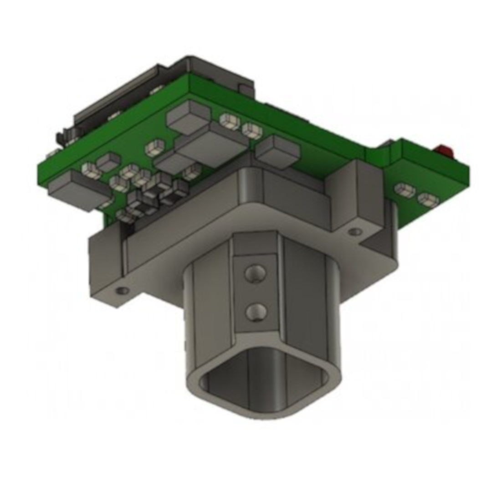
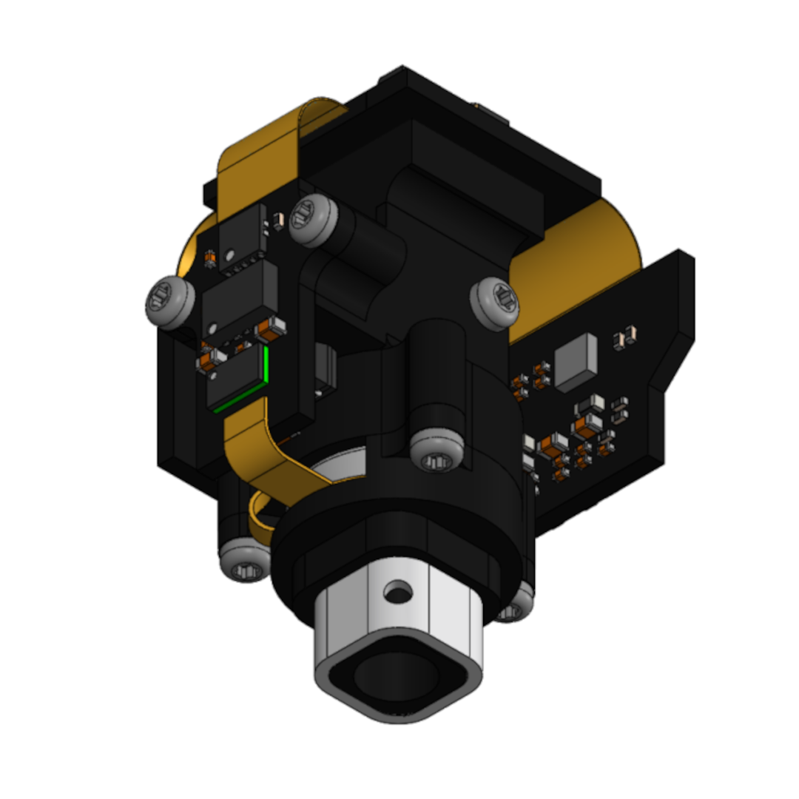

Miniscopes Comparison#
Open Ephys sells the following miniscopes:
Wireless UCLA Miniscope v3 kit (store)
UCLA Miniscope v4 kit or assembled (store, documentation, github)
UCLA Miniscope v3 Wireless (obsoleted)
UCLA Miniscope v4
Comparison Chart#
The specifications of the miniscopes sold by Open Ephys (e.g. resolution, field-of-view, SNR, focusing capability, mode of data transmission, etc.) differ meaningfully. This chart serves to compare those miniscopes.
UCLA Miniscope v3 Wireless |
UCLA Miniscope v4 |
|
|---|---|---|
Part Status |
Deprecated |
Active |
Mass (g) |
4.5 |
<3 |
Dimensions (mm) |
– |
14.5W 18L 22.5H |
Nominal Working Distance (µm) |
50 - 200 |
675 (this can be adjusted by swapping lenses) |
Focusing Capability |
Manual mechanical slide |
±200um ETL/EWL focal adjustment |
Field-of-View |
450µm × 700µm |
1mm diameter (this can be adjusted by swapping lenses) |
Resolution (pixels) |
480 × 752 |
608 × 608 |
FPS |
60 |
10, 15, 20, 25, 30 |
Data Acquisition Hardware Compatibility |
On-board logger |
Miniscope-DAQ or MiniCAM |
Wire |
None |
Compatible with lightweight 0.3mm coaxial cable for power and data |
Excitation Efficiency Ranking (lower is better) |
2 |
1 |
Orientation Sensing |
No |
Yes |
Position Sensing |
No |
No |
Price as sold by Open Ephys |
€540 (wireless conversion kit) |
€1,985 (fully assembled + 1x cable + 2x baseplates) |